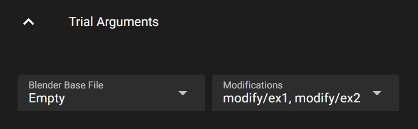

Modify Configurations#
Overview#

The main workspace view allows you to modify the launch, action and trial parameters of a configuration and execute an action. When modifying parameters here, the original parameters are not changed, however. Instead, variants of the whole configuration, the launch and the trial parameters are created, which may then be modified. When you change the original configuration files via an editor, you can update one or all variants with the changes via a GUI menu option, without overwriting all variant changes.
The variants are implemented by creating a copy of the launch, trial an possibly other configuration files. These copies can then be modified by the user via the GUI. When an action is executed for a specific variant, the whole configuration with all configuration files is copied to an execution instance folder, replacing the launch and trial files with the version of the currently selected variant. This also allows the user to modify the parameters of a variant, while an action is executed on the variant, as the execution uses a separate, temporary copy of the configuration files.
When images have been rendered from executing a variant, you can use the eye-icon to view the generated data. Note, that images will only be shown if a production configuration is available for the render configuration. See Web Image Viewer for more details.
Variants#
The following shows an exemplary folder structure that may be created via the web gui.

You can give a name and description to each variant, to more easily go back to certain configurations. If the name includes a ‘:’, then the text in front of the ‘:’ is the short title used in the drop-down box.
You can create and delete variants via the menus. You can also add variants with the + buttons in the variant selection fields.
Defining GUI Elements#
Elements defined in the launch and trial configuration files can be made editable via the GUI in different ways:
element naming convention
per-element GUI definition
GUI definition block
mGUI
Element Naming Convention#
The easiest way is to use the element naming convention of the Catharsys pre-defined elements, like iFrameStart or bDoProcess. Elements in the launch file following this naming convention are automatically displayed in the GUI without any further definitions needed. Specifically, the naming convention is:
the first letter is one of the following lowercase letters:
i: integer valuef: float valueb: bool values: string value
The second letter must be an uppercase letter.
If the rest of the variable name uses camel case for multiple words, spaces are inserted between words for the description.
For example, the configuration file definitions
"bDoProcess": true,
"iConfigCountX": 2,
generates the following GUI controls:
Per-Element GUI Definition#
To define the GUI representation of a configuration element in more detail, an additional element can be defined with the naming convention [Element name]/gui, which must define a dictionary. For example,
"my_value": 3.14,
"my_value/gui": {
"sDTI": "gui/control/number/float:1",
"sLabel": "My Value",
"sTooltip": "This is my wonderful value",
}
The my_value/gui element defines the GUI representation of my_value explicitly. The base definition elements available for all GUI control types are:
sDTI: The type of GUI control element. This element is optional, if the type can be deduced from the name as described before. For a full list of availabel control types see GUI Controls.sLabel: The GUI element label. If this element is not given, the name is either deduced from the naming convention or the element name itself is used.sTooltip: A tooltip for the GUI element. If this element is not given, no tooltip is shown.
Every control may have additional elements to specify more details. See GUI Controls for a full description.
GUI definition block#
The GUI can be controlled in more detail using a top-level element mGui in the configuration file, which must be a dictionary. This dictionary must have an element sDTI with the value /catharsys/gui/settings:1.0. All other elements in this dictionary are optional. It can contain the following elements:
Element |
Type |
Description |
|---|---|---|
|
dictionary |
GUI control definitions per variable. |
|
dictionary |
Default values per control type. |
|
bool |
If true (default), all valid configuration elements are shown. |
|
list |
List of configuration elements that are shown. |
|
list |
List of configuration elements that are not shown. |
|
dictionary |
Definition of GUI grid layout. |
See GUI Definition Dictionary for a detailed description.
Launch Arguments#
By default, all global launch arguments that are pre-defined by the Catharsys system are available for modification in the GUI. Furthermore, all user defined launch arguments are automatically available, if they follow the naming convention described above.
The same is true for the per-action configuration elements. These are displayed in a separate block below the global launch arguments, as shown in the image above.
The GUI settings from an optional mGui block in the launch file apply to the global and action specific launch arguments.
Trial Arguments#
Trial configuration files are treated somewhat differently to launch configuration files. A launch file should only contain parameters that are specific to the launching of an action. For a rendering action this can be the render quality, the number of frames and the execution machine.
The trial files, on the other hand, should capture all parameters that define what is done by the action. For a rendering action this can be the Blender file to use, the assets to use, the modifiers, the camera, etc. A trial file, together with the configuration files it references, should fully define the results generated by an action. To change the generated products the trial file or its’ referenced configuration files have to be changed. Also, multiple trial files can be used, to keep different versions.
Important
The launch configuration file must not contain any definitions that are needed to identically recreate an action content. The render quality, frame count, etc. do not modify the rendered content and are therefore part of the launch file.
The elements of a trial file that can be modified via the GUI are the local and global variables, and all elements in the mConfigs block. By default, no elements of a trial file are represented by GUI controls. To enable this feature you need to add a mGui block and either set bShowAllVars to true, or list all local and global variables that should be shown in lIncludeVars. Note that again only those elements are shown that either follow the naming convention or that have an associated gui definition block.
Note
Note that every action can specify a separate trial file. Therefore, the trial GUI can change when changing the active action.
Example#
Here is an example trial file with GUI definitions:
"__globals__": {
"sAssetPath": "~/my_assets",
},
"__locals__": {
"sBlenderFilename": "Empty",
},
"mGui": {
"sDTI": "/catharsys/gui/settings:1.0",
"bShowAllVars": true,
"mVars": {
// All elements of the 'mConfigs' block should be
// selection controls. Multiple selection is enabled automatically.
"mod": {
"sDTI": "gui/control/select/str:1",
"sLabel": "Modifications",
"sTooltip": "Select a set of modifications",
"lOptions": ["modify/ex1", "modify/ex2" ],
},
"sBlenderFilename": {
"sDTI": "gui/control/select/str:1",
"sLabel": "Blender Base File",
"sTooltip": "Select a Blender base file",
"lOptions": ["Empty", "Basic_01"],
"bMultiple": false,
},
},
},
"mConfigs": {
"render": ["render"],
"cap": ["capture"],
"cam": ["Cam.Pano.Std.Test_120deg_48KP"],
"loop_x": ["loop/rand-x" ],
"loop_y": ["loop/rand-y" ],
"mod": ["modify/ex1", "modify/ex2" ],
"depth": ["depth"],
},
"mBlender": {
"sDTI": "/catharsys/trial/blender:1.0",
"sBlenderFile": "${path-workspace}/blend/$sBlenderFilename.blend",
}
This generates the following GUI elements:

The variables defined under __globals__ are available in all configurations referenced by the trial file. The sBlenderFilename variable defined under __locals__ is only available in the trial configuration and is used to define the Blender file in the mBlender block.
The variable mod is a configuration id as defined in the manifest file. The GUI element must be a selection element with multiple selection, so that a list is returned. In this example, the GUI element allows you to select which modification configurations are applied.
Multiple Trial Files#
As discussed above it can be useful to have multiple trial files. Note that each trial file references its’ own manifest file, such that the trials can reference different sets of configurations. To make a set of different trial files selectable via the GUI, you need to define the element lTrialFileOptions in the launch file, either under mGlobalArgs or in the mConfig block of a specific action definition in the launch file. The list of trial files defined for a specific action takes precedence over a list defined in the global arguments block.
For example, if the available trial files are defined as
"lTrialFileOptions": ["trial", "trial-2"],
there is an additional GUI control added automatically next to the trial variant selection, where the active trial file can be selected: